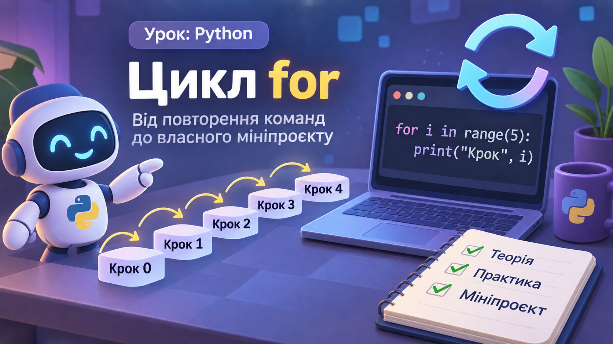

Цикл for: повторюємо з користю
Створіть власний генератор повідомлень і навчіться керувати повтореннями.

📖 Теорія за кнопкою
Відкрити коротке пояснення
Цикл for повторює команди для кожного значення послідовності. range(5) дає числа 0, 1, 2, 3, 4. Тіло циклу має відступ.
for i in range(5):
print("Крок", i)range(2, 7) дає 2, 3, 4, 5, 6; range(1, 8, 2) дає 1, 3, 5, 7.
🎛️ Симулятор циклу
Виберіть кількість повторень і простежте, як змінюється лічильник.
Очікуємо запуску
🧩 Конструктор циклу
Натисніть фрагменти у правильному порядку, щоб побудувати програму, яка друкує три привітання.
💻 Python Code Runner
Редагуйте код і запускайте його у браузері. Для першого запуску потрібен інтернет, щоб завантажити Pyodide.
Консоль
Натисніть «Запустити Python».
🎯 Практичне завдання
Шкільний гурток надсилає 5 нагадувань. Напишіть цикл, який виведе рядки «Нагадування 1» ... «Нагадування 5». Використайте range.
🚀 Мініпроєкт «Генератор афіш»
Організатори шкільного фестивалю готують короткі афіші для п’яти подій. Створіть цикл, який друкує номер події та емодзі 🎉. Додайте власний стиль оформлення в тексті.
📄 Підсумковий PDF
У звіт потраплять результати конструктора, симулятора, код, вивід програми, мініпроєкт і відповіді.
🧪 Діагностика Moodle
Перевірте, чи дозволяє середовище виконання JavaScript, збереження даних і завантаження зовнішніх бібліотек.